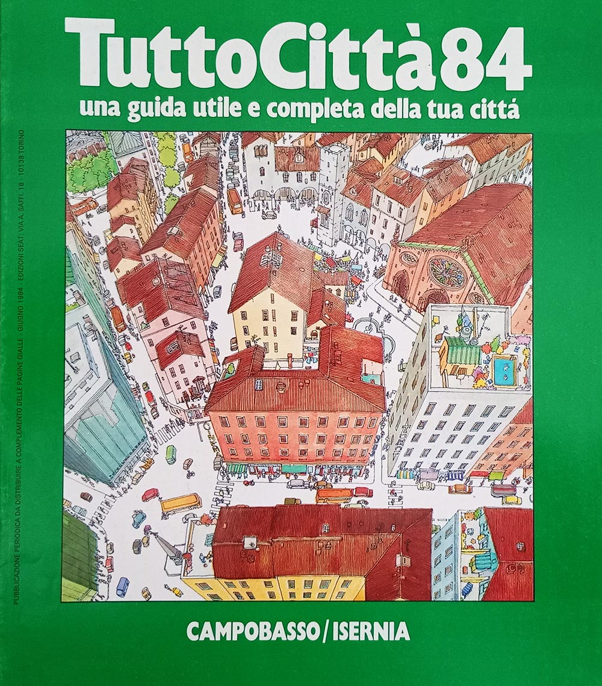
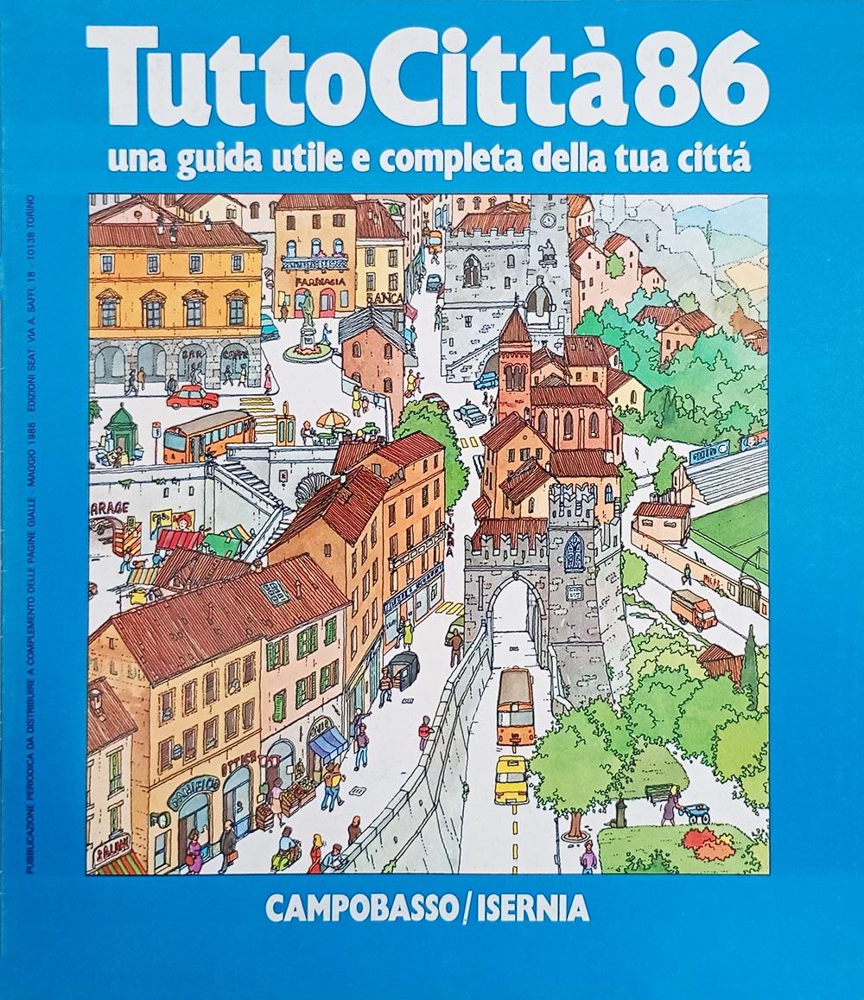
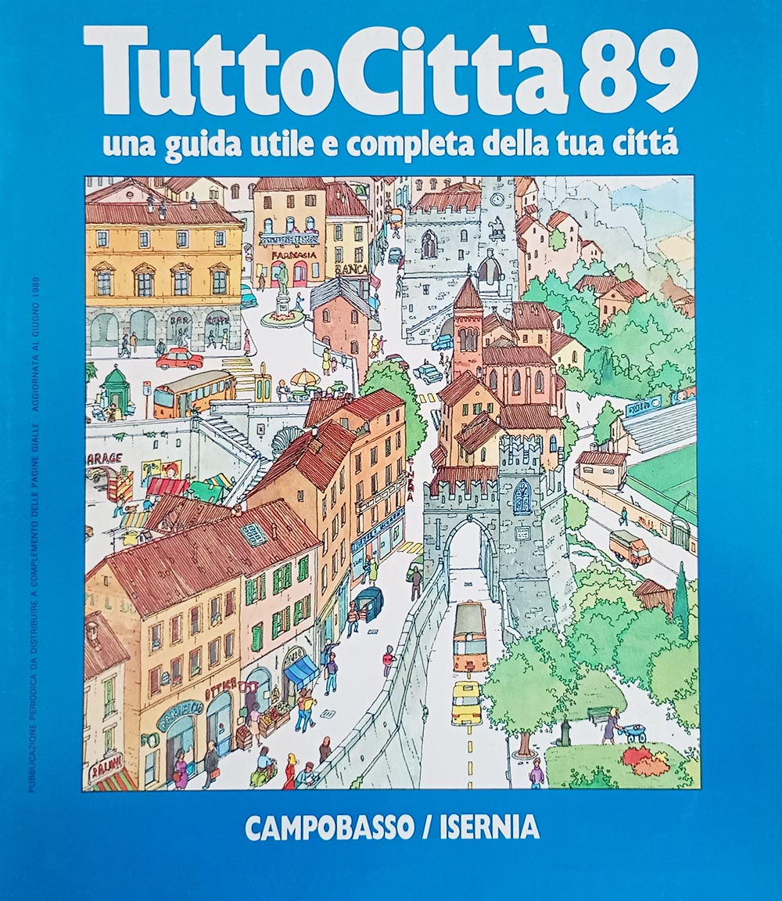
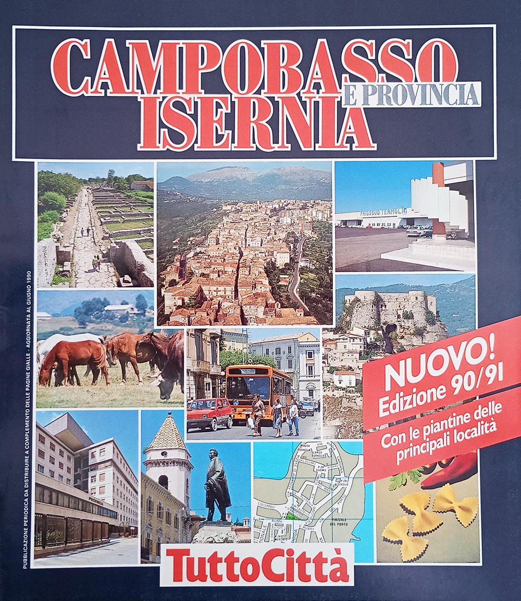
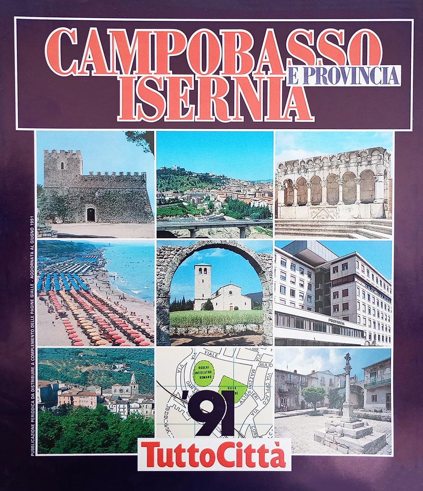
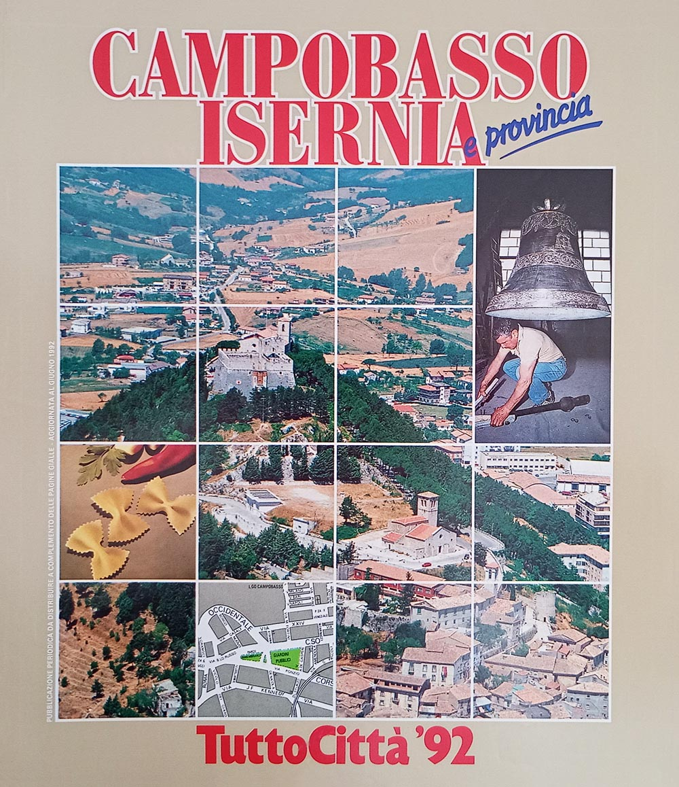
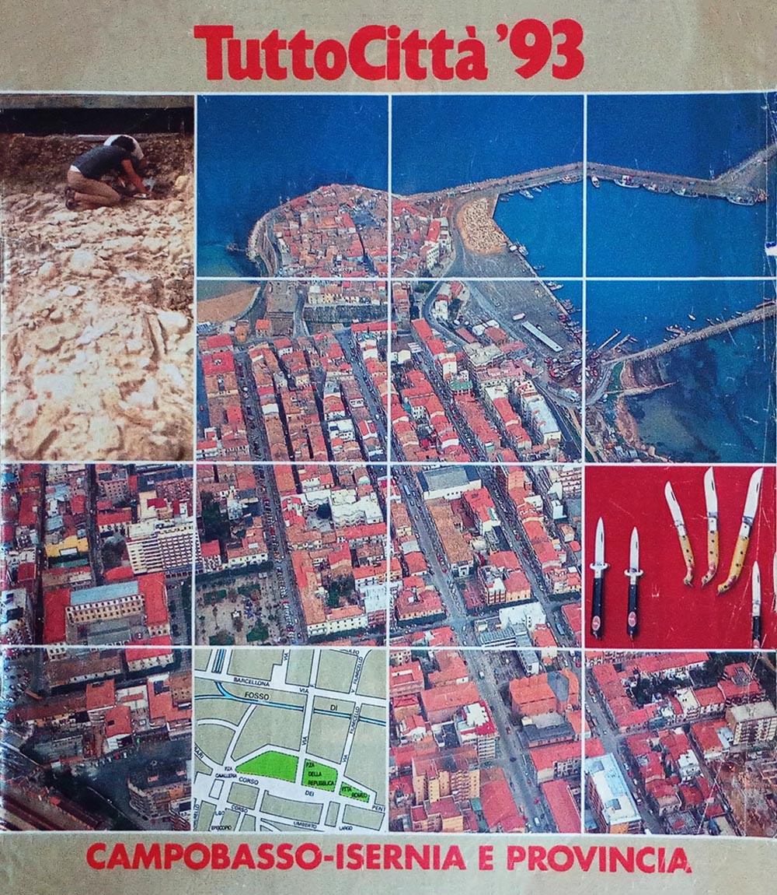
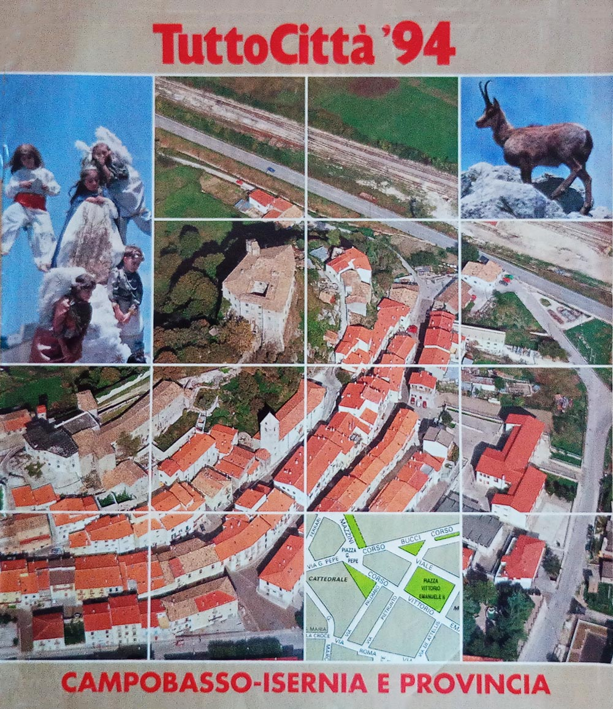
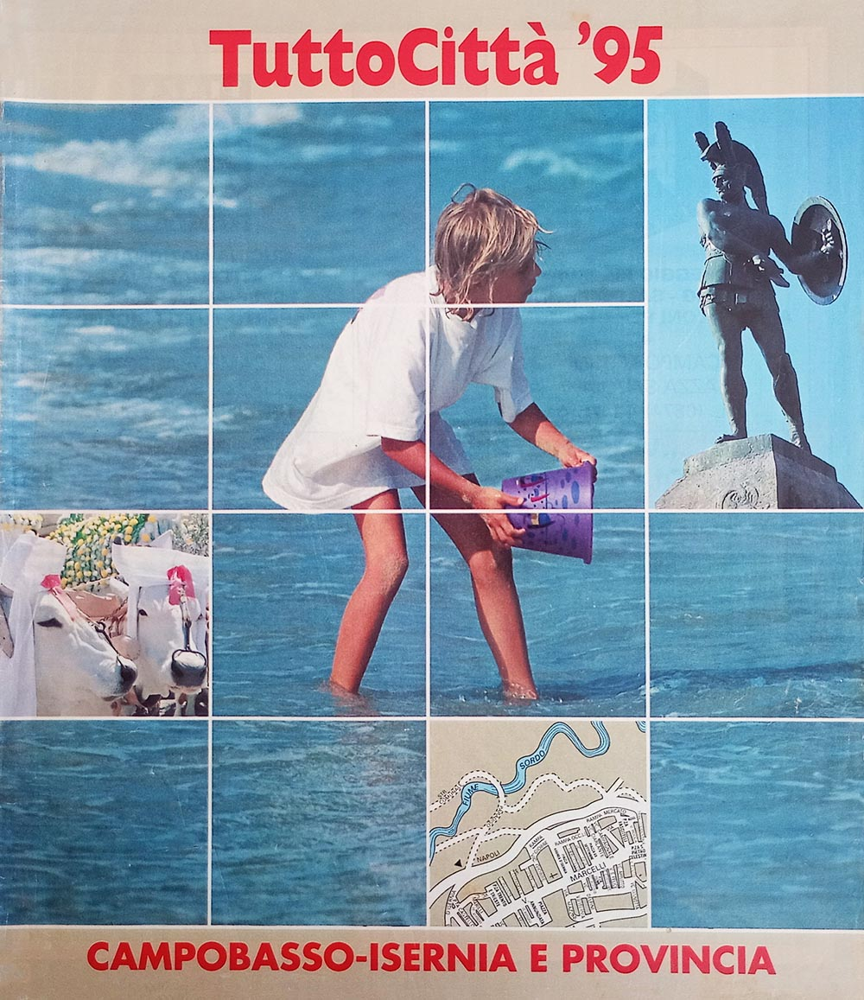

Il Molise in dettaglio
Questa pagina è incompleta. Alla raccolta mancano 8 dei 17 fascicoli accertati della regione — Campobasso - Isernia, annate 81/82–83/84, 85/86, 87/88, 88/89, 96/97 e 97/98 — e i dati che dipendono dall'esame diretto dell'esemplare sono segnati in sospeso. Le copertine non reperite sono sostituite da un segnaposto; nella griglia dei comuni le annate scoperte portano una croce e non una casella vuota, perché vuoto significherebbe «non cartografato», che non è ciò che sappiamo. Con otto annate su diciassette senza fascicolo, qui le croci sono quasi metà della griglia. Per queste ragioni la pagina non è annunciata altrove nel sito, e vi si arriva soltanto per indirizzo.
Questa pagina si occupa di definire con estrema precisione l'organizzazione interna dei fascicoli dell'intera regione Molise.
Il censimento registra un totale di 17 fascicoli e 10 comuni cartografati.

Tabella dei fascicoli
I fascicoli del Molise appartenevano in principio alla serie iniziale: il primo fascicolo, edito a maggio del 1981, era infatti intitolato TuttoCittà 81.
Alla fine degli anni '90 la pubblicazione dei fascicoli cessò per entrambe le province.
La seguente tabella censisce i dati fondamentali dei fascicoli del Molise, mostrandone le copertine e indicandone il formato, il layout così come definito in questa pagina, e il numero totale di pagine, anno per anno.
| Annata | Colore tavole | Copertine |
|---|---|---|
81/82 | Campobasso - Isernia 81
| |
82/83 | Campobasso - Isernia 82
| |
83/84 | Campobasso - Isernia 83
| |
84/85 |  Campobasso - Isernia 84
| |
85/86 | Campobasso - Isernia 85
| |
86/87 |  Campobasso - Isernia 86
| |
87/88 | Campobasso - Isernia 87
| |
88/89 | Campobasso - Isernia 88
| |
89/90 |  Campobasso - Isernia 89
| |
90/91 |  Campobasso - Isernia 90/91
| |
91/92 |  Campobasso - Isernia 91
| |
92/93 |  Campobasso - Isernia 92
| |
93/94 |  Campobasso - Isernia 93
| |
94/95 |  Campobasso - Isernia 94
| |
95/96 |  Campobasso - Isernia 95
| |
96/97 | Campobasso - Isernia 96
| |
97/98 | Campobasso - Isernia 97
|
{kind=link}
{kind=link}
{kind=link}
{kind=link}
{kind=link}
{kind=link}
{kind=link}
{kind=link}
{kind=link}
Tre layout in diciassette anni
La seguente tabella censisce i vari layout utilizzati per i fascicoli della regione, secondo il sistema definito durante il censimento osservando l'impaginazione; le loro caratteristiche sono descritte in questa pagina. Come descritto anche lì, i cambi di layout non rispettano i cambi delle serie di copertina descritte nell'apposita pagina di questo sito.
| Layout | Annate | Anni di copertina |
|---|---|---|
| TuttoCittà '80 classico | 83/84 – 89/90 | 83848586878889 |
| TuttoCittà '90 classico iniziale | 90/91 – 91/92 | 90/9191 |
| TuttoCittà '90 classico | 92/93 – 97/98 | 929394959697 |
Non compaiono le annate 81/82 e 82/83: il fascicolo non è in raccolta e il layout non è stato accertato.
Le città cartografate
La seguente tabella censisce tutti i comuni che sono stati cartografati nel corso del tempo e per quante annate. Ad ogni riga corrisponde un comune, in ordine alfabetico e non per provincia: lo scopo è infatti identificare a colpo d'occhio quali comuni entrano ed escono dalla cartografia nel corso degli anni. I due capoluoghi — CAMPOBASSO, ISERNIA — sono in maiuscolo, ma restano al loro posto nell'alfabeto. La croce segna le annate in cui il fascicolo non è in raccolta: non sappiamo se il comune fosse cartografato.
Le caselle azzurre indicano invece che il comune era cartografato, ma non compariva il relativo elenco delle vie, un fenomeno questo relativamente comune soprattutto nei fascicoli degli anni '80. Nel Molise è la regola: nelle tre annate anteriori al 90/91 di cui la raccolta ha il fascicolo — 84/85, 86/87 e 89/90 — nessun comune oltre ai due capoluoghi compare nell'elenco delle vie, e solo dal 90/91 cartografia e indice tornano a coincidere. Delle altre sei annate di quel periodo non sappiamo nulla, perché i fascicoli non sono in raccolta.
Espandi la griglia delle città — 10 città su 17 annate
| Città | 81/82 | 82/83 | 83/84 | 84/85 | 85/86 | 86/87 | 87/88 | 88/89 | 89/90 | 90/91 | 91/92 | 92/93 | 93/94 | 94/95 | 95/96 | 96/97 | 97/98 |
|---|---|---|---|---|---|---|---|---|---|---|---|---|---|---|---|---|---|
| Agnone | × | × | × | × | × | × | × | × | |||||||||
| Bojano | × | × | × | × | × | × | × | × | |||||||||
| CAMPOBASSO | × | × | × | × | × | × | × | × | |||||||||
| Campomarino | × | × | × | × | × | × | × | × | |||||||||
| Campomarino Lido | × | × | × | × | × | × | × | × | |||||||||
| ISERNIA | × | × | × | × | × | × | × | × | |||||||||
| Larino | × | × | × | × | × | × | × | × | |||||||||
| Montenero di Bisaccia | × | × | × | × | × | × | × | × | |||||||||
| Termoli | × | × | × | × | × | × | × | × | |||||||||
| Venafro | × | × | × | × | × | × | × | × |
Le città cartografate almeno una volta sono 10. Sulle 9 annate di cui la raccolta ha il fascicolo, il minimo è nelle annate 84/85 e 86/87, con 5 città; il massimo nelle annate 89/90 e 94/95, con 7.
L'indice degli articoli, 1990-1997
Dall'annata 1990/91 ciascuna provincia ha una rubrica di articoli su storia, ambiente ed economia locale — in molti fascicoli sottotitolata «Vivere la città» — che perdura fino all'annata 1997/98. Sono 68 titoli, mai indicizzati altrove: un piccolo corpus di giornalismo locale distribuito gratuitamente in centinaia di migliaia di copie e poi scomparso senza lasciare traccia in alcuna risorsa online. Per le annate 96/97 e 97/98 il fascicolo non è in raccolta e l'indice resta in sospeso.
I titoli sono trascritti come compaiono nel fascicolo. Il testo degli articoli non è riprodotto: i diritti appartengono all'editore.
Annata 90/91
- Campobasso
- Anni 90. A scuola di agriturismo • Identikit di una provincia • All'ombra del Castello Monforte sfilano santi, angeli e diavolacci • Spaghetti, zucchero, mozzarella e affari • Metti un motore a Termoli • Sepino. Sorprese a ogni scavo • La ricetta della nonna
- Isernia
- Anni 90. Le idee diventano impresa • Identikit di una provincia • Il pranzo paleolitico del primo molisano • L'anima delle campane di Agnone • Scapoli. Gli ultimi zampognari • La ricetta della nonna
Annata 91/92
- Campobasso
- Verso il '92. Campobasso, manager per l'Europa • Lo sviluppo in cifre • Il castello Monforte e i feudatari ribelli • La stampa locale. Settimanali d'informazione • Gambatesa: sfida ai Gonzaga • Ricette contadine, semplici e gustose • Da Sant'Elia alle rovine di Saepinum
- Isernia
- Verso il '92. Nuovi mercati nel futuro di Isernia • Una provincia di risparmiatori • Le lapidi romane nella fontana • La scienza a Pesche • L'abbazia di San Vincenzo e la cripta di Epifanio • Da Frosolone l'energia pulita • Vini e gastronomia. L'antica cucina dei pastori • Nel paese dei jeans • I rintocchi delle campane di Agnone
Annata 92/93
- Campobasso
- Il futuro possibile. La vecchia città giardino ora è una mini-metropoli • Il Processo di Biscardi, lo spettacolo dello sport • Vini e gastronomia. Zuppa di lenticchie e frittata di basilico • Un brindisi con il Biferno
- Isernia
- Il futuro possibile. Isernia, storia e ambiente la speranza per i giovani • Dai romani all'Unità d'Italia, le battaglie del fiero Molise • Nomi e cognomi. Nicandro in omaggio al patrono
Annata 93/94
- Campobasso
- Italia domani. Il futuro di Campobasso tra estetica e morale • I duelli di Gabriele Pepe profeta della Nuova Italia • Roccavivara, l'abbazia tra gli ulivi • Nomi e cognomi. Sciaretta a Termoli, Pardo a Larino • Arte in tavola. Il mangiatore di prosciutto e i dubbi di "Emile"
- Isernia
- Italia domani. L'abbraccio di Isernia leale e un po' ribelle • Le lame di Frosolone, un'arte antica • Le grandi tappe della storia • Le poesie di papa Celestino • Ninne-nanne di botte e minacce • Il santuario di Castelpetroso un'oasi di luce rosa • San Vincenzo, la bonifica dei frati • I silenzi degli antichi borghi e le campagne di Agnone • Ortica, aglio e diavolicchio prelibatezze contadine • Le piccole capitali del vino
Annata 94/95
- Campobasso
- Il nuovo che emerge. Campobasso, la solidarietà allarga le sue maglie • Appunti di storia • Miti, leggende. I miracoli di Leonardo e la fiaba dei sorci • I Robinson Crusoe della nuova musica • La provincia verde. Sul Sentiero Italia tra volpi, falchi e mermotte • Antiche ricette. Il fritto misto e i segreti dei calcioni
- Isernia
- Il nuovo che emerge. Isernia si mobilita per proteggere l'ambiente • Musica giovane, il "Tratturo" apre la strada • Miti, leggende. Il soffio gelido di donna Borea • Antiche ricette. La zuppa di cardi che ispirò il poeta
Annata 95/96
- Campobasso
- Progetti giovani. Nasce a Campobasso lo sportello delle idee • All'ombra delle sequoie nel parco della contessa • Bongusto, trent'anni di successi • Jacovitti, l'artigiano dei fumetti
- Isernia
- Progetti giovani. Isernia, il gioco del business • L'abate viaggiante che diventò Papa • L'abbazia sul Volturno distrutta da Saugdan
Annata 96/97
- Campobasso
- in sospeso il fascicolo Campobasso - Isernia 96 non è in raccolta
- Isernia
- in sospeso il fascicolo Campobasso - Isernia 96 non è in raccolta
Annata 97/98
- Campobasso
- in sospeso il fascicolo Campobasso - Isernia 97 non è in raccolta
- Isernia
- in sospeso il fascicolo Campobasso - Isernia 97 non è in raccolta
I dati
molise_fascicoli.csv— un fascicolo per riga: foliazione, layout, formato, copertina, presenza in raccoltamolise_cartografia.csv— un comune per riga e per annata, con la provincia e se compariva nell'elenco delle viemolise_articoli.csv— un titolo per riga: l'indice delle rubriche provinciali
Chi possiede i fascicoli mancanti e vuole vedere questa pagina completata troverà nelle questioni aperte come contribuire.